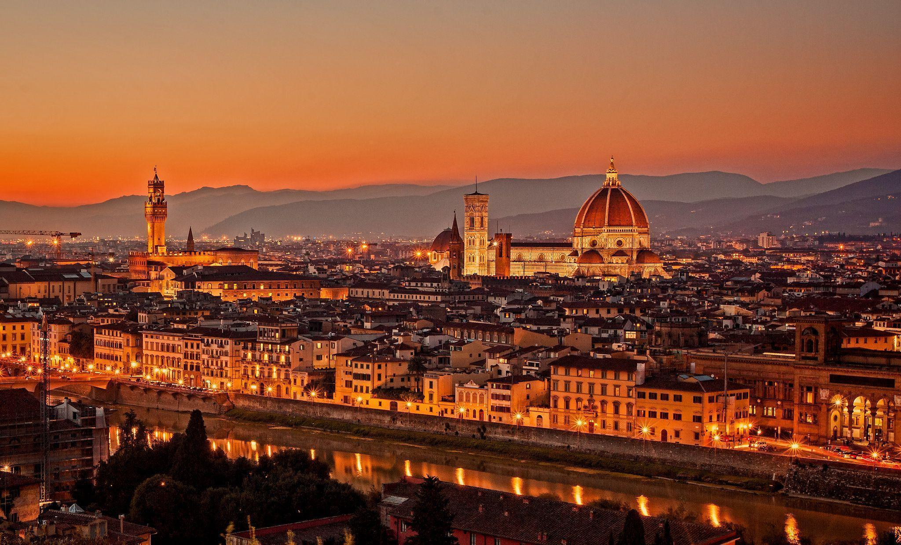

피렌체는 15세기, 16세기에 메디치 가문이 다스리며 아름다운 문화와 경제적 풍요를 꽃피운 르네상스 시대를 상징하는 도시이다.
과거 피렌체를 호령했던 메디치 가문의 예술애호사상에 입각하여 배출된 수많은 르네상스 대표 예술가들의 작품이 피렌체 곳곳에 널려있어 마치 도시 전체가 박물관 같은 느낌을 준다.
굵직굵직한 르네상스의 예술가/철학자/과학자들이 모두 메디치 가문의 후원 아래 수많은 작품을 피렌체에 남겼다. 이로 인해 도시 전체가 문화유산으로 지정되었다.13세기에 지어진 산타마리아 델 피오레 대성당을 비롯하여 산타크로체 성당·우피치 궁전·피티 궁전 등의 뛰어난 건축물과 조토·필리포 브루넬레스키·산드로 보티첼리·미켈란젤로 부오나로티와 같은 대가의 예술 작품들이 남아 있다. 피렌체에는 600년에 걸쳐 일어난 예술 업적이 도시 곳곳에 펼쳐져 있다.